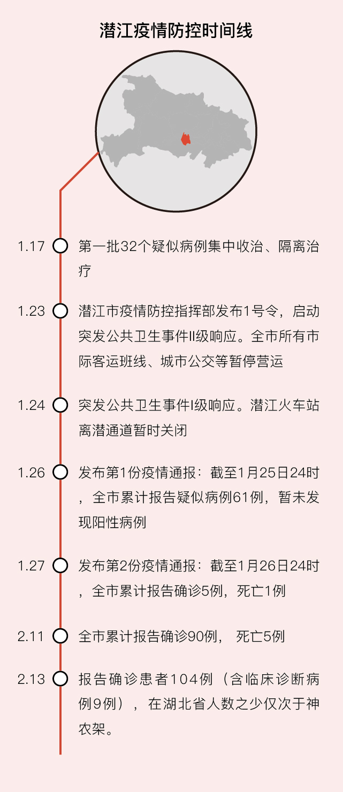

“武汉封城具有史无前例的现代防疫实验意义”
原文链接 备份链接 SARS17年后，新型冠状病毒肺炎再次对中国以及全球的防疫体系提出了严峻挑战。尽管在20世纪，医学对已知传染性疾病进行了有效控制，但正如世界卫生组织所强调的那样，新型传染病仍是21世纪防疫大敌。新型传染病带来的挑战在哪 …
封面报道之治理篇：
孝感：如何夯实乡村防火墙？ | 鄂州：考验疫区网格员 | 咸宁：接送病人在路上 | 襄阳：最后的出口
湖北省疫情分布图以颜色深浅表示感染程度。目前，武汉之外16地市仅有潜江和神农架两块是浅粉色。
数据显示：截至2月13日24时，湖北省累计报告新冠肺炎病例51986例（含临床诊断病例15384例），神农架林区排在末位，仅10例；其次就是潜江市，104例（含临床诊断病例9例）。
神农架地处鄂西，山高林密；潜江则在湖北腹地，距武汉只150多公里，交通便利，人烟稠密。在周边严峻疫情包围下，潜江犹如汪洋中的一条船，引人注目。
这不是侥幸和偶然，一切源于潜江的恰当应对。
潜江先行
潜江市委书记吴祖云回顾潜江防疫举措时说：“我们决断早，力度大，言入心。”据他介绍，1月17日，潜江果断将第一批32个疑似病例集中收治、隔离治疗。那一天，正是湖北省“两会”闭幕日，武汉市卫健委当天未通报新增病例，官方口径仍然是“未发现明确人传人”。
潜江为何独自先行？吴祖云回忆称，那些天正在武汉参加湖北省“两会”，获知了一些关于疫情的信息。“我和市长觉得这个事情太大了，所以我们先下手，哪怕冒了一点点不是太合规的风险。”
这“风险”是什么？吴祖云未多作解释。但凭经验可以推知：疫情的预警、检测、排查，从来都是双刃剑，是有成本的。做对了，固然是先见之明；但假如预警之事并未发生，成本谁来承担？谁负责任？这个时候，潜江提前单独行动，体现了主政者的担当，虽然会冒一些风险，却可以避免很多无谓的损失。
耐人寻味的是，财新记者查阅了1月17日前后的潜江政府网，此举未发现有任何记载；惟一能查询到的，是1月23日《潜江研究部署新型冠状病毒感染的肺炎防控工作》一文——这说明，这些先行举措在当时是“可做不可说”。
根据官方简历，吴祖云1967年1月出生，1988年毕业于上海交通大学电气工程及其自动化专业，工商管理硕士学位。自基层一步步擢升，曾任监利县委副书记、武汉市黄陂区委书记，2018年任潜江市委书记。
敬畏与谦抑
正因为“立足早”，才抢占了防疫主动权。接下来，如何有效行动，而不是盲动、乱动？这需要对防疫这样专业的事有清醒、正确的认知。对此，吴祖云有一句话广为流传：“这个病毒我们还没有搞清楚，敌人太强大了。”这便是对人类的未知存有敬畏之心。唯此才能谦抑、谨慎，不轻浮、不虚飘。
吴祖云还活学活用“孙子兵法”——因为敌人强大，因此要“强而避之”，正确的战略战术是“善守者藏于九地之下”，暂时不与病毒正面冲撞，假以时日，等科研人员研究出药物再歼灭之。因此，吴祖云提出：“让社会安静下来，把‘安静’作为一种武器。老百姓要待在家里，把病毒围困在最小的单元。”
“要以静制动，静候佳音。”他如此总结他的防疫思路。
1月23日，湖北省疫情防控工作会议召开后，由于潜江此前已有充分准备，便能立刻开始行动：成立市疫情防控指挥部；设立11个工作专班；第一时间“封城”；终止所有娱乐活动；出台禁足令。
1月23日下午，潜江市疫情防控指挥部发布1号令，全面启动突发公共卫生事件II级响应，同时发布全市所有市际客运班线、城市公交等暂停营运的通告。1月24日，指挥部下达2号令，全面启动突发公共卫生事件I级响应，并发布潜江火车站离潜通道暂时关闭的通告。紧接着，指挥部发布全市疫情通报、公布捐赠方式、公布新增救治定点医院等。后来，潜江市委、市政府更是制定并执行了“路口初检，医院救治，追踪近者，定点观察，医患隔离，停止聚集”等防控准则。
政府与民间良性互动
回过头看，潜江的防疫管控堪称严厉，如定点隔离、居家隔离、封城、封路等。但整体看，这些“硬核”举措并未引发太多负面情绪，这可能与潜江的“村民自治”传统不无关系。
1999年，潜江市因“村务公开、民主监督、以法治村、民主管理”等举措，被民政部表彰为“全国村民自治模范市”。长期熏陶下，潜江民众有较高的自治意识，与政府互动较顺畅。
潜江市新冠病毒感染肺炎疫情防控指挥部一位工作人员对财新记者介绍说，此次疫情防控的具体措施有：全面实施网格化管理、地毯式走访；全面摸排返乡人员，实行“一户一档”登记，建立身体状况“微信日报告”机制；全部隔离观察并追踪密切接触者等等。
潜江市还采用了“五户联防”模式：每五户居民构成一个单元，确定一名联防员，由联防员负责单元内成员的防控。为充实基层防控力量，派驻420多个驻村工作队，实现全市所有村（社区）全覆盖。这些举动都配套有说服动员，因而得到了村民的认可。
财新记者采访了一位普通潜江市民。她告诉记者，现在一个家庭三天内只能派一个人外出买东西，要凭出入卡才能进出社区和村口。但她理解这样严格管理的意义，愿意服从。
再往后，潜江对全市所有居民进行分类管治，严格实行“七个一律”：对确诊病例一律由定点医疗机构集中治疗；对疑似病例一律由定点医疗机构或市里确定的隔离病区集中收治；对有肺炎症状的发热病人一律由属地就地集中隔离医治观察；对密切接触者一律由属地就地安排集中隔离观察；对其他一般发热病人一律由社区（村）严格落实居家隔离观察措施；对治愈出院的病例一律就近集中隔离观察；对全市其他人员一律实行严格管控措施，坚决防止人员流动。
类似种种措施，自然给居民日常生活带来不便，这就要同步考虑配套措施。潜江市疫情防控指挥部一位工作人员告诉财新记者，市委书记吴祖云曾说，要让老百姓配合政府，就一定要做好思想工作，并且格外保障民生，解决老百姓的后顾之忧。
为此，那些天，潜江加强了科普宣传，以电视节目、抖音短视频、流动宣传车、乡村大喇叭等“接地气”的形式，让市民掌握更多的健康知识和防控要点，提高自我保护意识。
吴祖云在工作间隙，还自编了防疫“三字经”——“勤洗手，常开窗；戴口罩，把毒挡；少聚会，不徬徨；缓出行，同舒畅⋯⋯”全文总共60个字，琅琅上口，已在潜江广为传播。
吴祖云曾经看望一个发热病区隔离楼。他通过对讲机对楼内居民说：“全市人民都很惦记你们，希望你们在守护市民健康的同时，也照顾好自己的身体，我们永远在一起。”
按照“满足当下防控需要，留足后续防控余地”的原则，潜江市提前研判，把保障民生落实在疫情发生之前。市政府统筹资源，把一些酒店、党校等作为市级集中留观点，对全市发热人员、密接人员做到“宁可全收、决不遗漏”；对被隔离人员，全部由各区、镇、办事处免费提供食宿。
疫情发生以来，潜江已拨付医保基金7000万元到各救治医疗机构。对于保防护物资，实行企业生产、对外采购、对上争取、社会募集四措并举，全力保障防护物资供应。
为了保证市民生活，全市建立了79个通风环保的供应点，对米、面、油、蔬菜、肉类、水产品以及药品等各类生活必需品，开辟大宗供应渠道，保障群众生活物资供应充足，价格稳定。
在保证自给自足的基础上，潜江市还两次向武汉赠送了10万只口罩、5吨虾稻米、30吨小龙虾以及鸡蛋、蔬菜等一大批生活物资。
这些措施的严格执行，减缓了潜江疫情传播的速度。在当前湖北疫情应对总体形势仍然十分严峻大背景下，潜江防控疫情的措施堪称一个稀缺样本，可供后来者鉴。

相关报道：
此文限时免费阅读。感谢热心读者订阅财新通，支持新闻人一线探求真相！成为财新通会员，畅读财新网！
更多报道详见：【专题】新冠肺炎防疫全纪录（实时更新中）
[《财新周刊》印刷版，各大机场书店零售；按此优惠订阅，随时起刊，免费快递。]
原文链接 备份链接 SARS17年后，新型冠状病毒肺炎再次对中国以及全球的防疫体系提出了严峻挑战。尽管在20世纪，医学对已知传染性疾病进行了有效控制，但正如世界卫生组织所强调的那样，新型传染病仍是21世纪防疫大敌。新型传染病带来的挑战在哪 …
原文链接 备份链接 要允许公卫流行病学专家发表意见 允许医生们讨论； 要信息透明，不要怕社会小混乱 小混乱可以避免大乱 2月7日晚，医护人员做好准备即将进入武汉客厅“方舱医院”进行工作。 据国家卫健委通报的数据，截至2月14日24时，全 …
原文链接 备份链接 【财新网】（记者 黄蕙昭 综合）“应收尽收、不漏一人”的强硬指令下，防控压力层层下压，社区作为抗疫“第二战场”承重更甚。艰苦卓绝的武汉保卫战中，基层社区暴露出诸多问题，折射防控指令之阻滞，上下衔接之龃龉，应急资源之困 …
原文链接 备份链接 在武汉经商、务工、求学的温州人大约有18万。春节前后，至少5万温州人从武汉等地返回温州。他们中很多人一到家乡就进行了14天的隔离观察。 有的是居家隔离，当地政府工作人员每天定时“查岗”，确认隔离者是否在家。 这些 …
原文链接 备份链接 题目叫“回武汉记”，其实人还在潜江，一步也走不了。所以应该叫“准备回武汉记”。希望下周的记录，是真正的回城记。 2月4日，正月十二。 隔离十四天结束，写了十四天日记。接下来的记录，应该叫“回武汉记”——虽然回武汉还没有 …